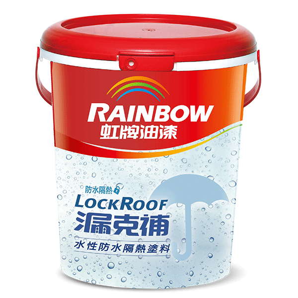

期末實作測試 學號:91135112 姓名:卓琮善
防水工程介紹
材料選擇
材料選擇
- 防水涂料：常用于墙面和地面的防水处理，可以形成坚固的防水膜。
- 防水卷材：例如沥青卷材和聚合物改性沥青卷材，适用于屋顶和地下室等大面积的防水需求。
- 防水砂浆：适用于对水压要求较高的场所，如地下室、水池等。
防水塗料介紹
- 在选择防水塗料时，需要根据具体的施工环境、需求和预算来选择合适的类型和品牌。
- 施工前需确保基面清洁、干燥，并按照厂家指导的施工工艺进行操作，以确保防水效果。。
- 不同类型的防水塗料可能有不同的施工要求和适用范围，请务必仔细阅读产品说明书和施工指南。

防水砂漿介紹
水泥基础：防水砂浆通常由水泥、砂子、特种胶粘剂、添加剂等组成。
聚合物改性：有些防水砂浆采用聚合物改性技术，以提高其柔韧性和附着力。
耐水性强：防水砂浆具有良好的抗水渗透性能，能有效防止水分渗透到建筑结构内部。
粘结力高：能够牢固地粘结在基层表面，形成连续的防水层。
耐久性：具有较长的使用寿命和良好的耐候性，适应不同气候和环境条件下的应用。